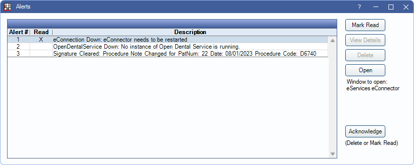
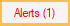

Alerts
Alerts notify users of errors, warnings, and actions needed.
In the Main Menu, click Alerts.
Only alerts the user for Alert Categories selected in User Edit, Alert Subscription are displayed. Additionally, if using Clinics, only alerts for the currently selected clinic are displayed.
 When there are new, unread alerts, the Alert item in the Main Menu appears red and indicates the number of active alerts. Alerts are updated based on the Check alert interval in seconds set in Preferences.
Highlight an alert in the grid to take action, or select multiple alerts to quickly acknowledge them. The options vary depending on the alert.
- Mark Read: Mark the alert as read, but do not remove it. Alerts are marked as read for the logged-in user only.
- View Details: View details of the alert.
- Delete: Remove the alert. Alerts are deleted for all users.
- Open: Open a window to perform an action related to the alert.
- Acknowledge: Marks the selected alerts as read or deletes if allowed. A warning displays before deleting any alerts. Alerts marked as read are marked for the logged-in user. Deleted alerts are deleted for all users.
Alert Descriptions
The Open Dental Service is required to generate many of these alerts.
| Example | Alert Category | Alert Type | Description | Action Needed |
|---|---|---|---|---|
| Open Dental Service Error | All | Generic | General alerts from Open Dental (tips, new features, update notifications). | Informational. No action needed. |
| Pending Online Payments: 4 | All | Online Payments Pending | Notifies user that there are pending online patient payments that need processed in Open Dental. This alert only stays marked as read once all Pending Online Payments have been processed. | Process payments using the steps outlined on Online Patient Payments. |
| Radiology Orders: 2 | All | Radiology Orders | Alerts the logged-on EHR provider of upcoming radiology orders needing approval (mark CPOE). | Approve orders in the Radiology Order List. |
| Patient would like a callback regarding this appointment: Sally Smith on 12/11/2017 | All/eServices | Patient Requests Callback | Notifies user about patients who have requested a callback about an eConfirmation. | Click Open Appointment to open the Edit Appointment window. Alert is deleted once the appointment confirmation status is no longer Not Accepted, or if the appointment is no longer scheduled. |
| The Web Sched New Pat feature now asks patients questions to verify patient information... | All/eServices | Web Sched New Patient | General informational alerts about the Web Sched New Patient eService. | Informational. No action needed. |
| New WebSched Appointment: 11/22/2017 2:00:00 PM | All/eServices | Web Sched New Pat Appointment Created | Alerts user of appointments that have been scheduled by new patients via Web Sched New Patient. | Click Open eServices Web Sched New Pat Appointment to view the appointments in the Web Sched Appointments Report. |
| Number Barred From Texting: 15035551234 has cancelled Appointment Texts and must text OPTIN to 1(503)363-5432 to begin receiving Appointment Texts. | All/eServices | Numbers Barred from Texting | Notifies user of wireless phone numbers that have rejected text messages. These patients' Text Message status automatically changed from OK to No. | Informational. No action needed. |
| The number of current MySQL connections has exceeded half the number of maximum connections allowed. | All | MySQL Maximum Connection Issues | Alerts user that the MySQL server has more than half of the allowed connections. | Click More Details to view information about the current connections, issues that can result when the maximum amount of connections are exceeded, and how to increase the number of connections. |
| New WebSched Appointment: 11/22/2017 2:00:00 PM | All/eServices | Web Sched ASAP Appointment Created | Alerts user about appointments that have been scheduled using Web Sched ASAP. | Click Open Web Sched Appointments to view the appointments in the Web Sched Appointments report. |
| eConnector services are being run on these computers: | All/eServices | Multiple eConnectors | Notifies user that multiple computers are running an instance of the eConnector. | Only one computer should run the eConnector. Contact Support for assistance in finding the correct eConnector computer. |
| eConnector Down: eConnector needs to be restarted | All/eServices | eConnection Down | Notifies user that the eConnector is down. | See General Services Troubleshooting. |
| eConnector Error | All/eServices | eConnection Error | Notifies user when the eConnector has an error. | See General Services Troubleshooting. |
| OpenDentalService Down. No instance of Open Dental Service is running. | All/eServices | eConnection Error | Notifies user when the OpenDentalService is down. | See Service Manager (Add/Edit a Service). |
| DoseSpot Provider Registered: User automatically assigned. | All/eRx | DoseSpot Provider Registered | Shows the User ID for the assigned user. | Informational. No action needed. |
| DoseSpot Provider Registered: Select user to assign ID. | All/eRx | DoseSpot Provider Registered | Appears when multiple users are assigned to one provider, or there are no users assigned. | Open the DoseSpot Assign User ID Window. Use the dropdown menu to assign a user. |
| DoseSpot Clinic Registered: Clinic Name has been registered. | All/eRx | DoseSpot Clinic Registered | Notifies user that a clinic was successfully registered. | Informational. No action needed. |
| New WebSched Appointment: 11/22/2017 2:00:00 PM | All/eServices | Web Sched Recall Appointment Created | Alerts user about appointments that have been scheduled using Web Sched Recall. | Click Open Web Sched Appointments to view the appointments in the Web Sched Appointments report. |
| Clinic Feature Changed, you may need to restart the eConnector if you are subscribed to eServices | N/A | Clinic Feature Changed | Alerts user to restart the eConnector when turning Clinics on/off. | Restart the eConnector. |
| Clinics Changed | N/A | Clinic Feature Changed (internal) | ||
| Multiple OpenDentalServices | N/A | Multiple OpenDentalServices | Alerts users that multiple OpenDentalServices are running on a single database. | Go to the Service Manager and stop excess services. |
| No instance of Open Dental Service is running. | All/eServices | OpenDentalService Down | Alerts the user the OpenDentalService is down. | Restart the OpenDentalService. |
| Unread WebMail | All | New WebMail | Alerts logged in Provider users of unread WebMail messages. | Click to view WebMail inbox. This alerts always displays for the intended user, regardless of alert subscriptions. |
| 4 consecutive failed email sends detected. 07/12/2019 11:37:00 AM | All/eServices | eConnector Email Send Failures | Alert will display if Emails have failed to send more than three times. Shows number of messages effected and time of last failure. | Informational. No action needed. |
| Supplemental Backup successful | All/Supplemental Backups | Supplemental Backups | The supplemental backup was successful. Alert created due to a successful supplemental backup | Informational. No action needed. |
| Mismatched eConnector time detected. eConnector: 7/20/2020 09:04:00, Database: 7/20/2020 10:04:00. eConnector time must match database time. Please correct eConnector computer time to match database time and restart eConnector. | All/eServices | eConnector Time | Notifies user that the MySQL time and eConnector time differ. Only occurs when the MySQL and eConnector are hosted on different computers. |
Correct the time on the server hosting the eConnector, then restart the eConnector service. |
| CareCredit Batch Errors: Errors processing CareCredit batch requests | N/A | CareCredit Batch Errors | Alert will display when there is an error when running CareCredit batch quickscreens due to a closed merchant number. | Click to open the CareCredit Transactions window. |
| Patient arrived at 12:26 07/16/2020 for appointment at 12:30 07/16/2020 | All/eServices | Patient Arrival | Alert will display when a patient has replied to an Arrivals message. This indicates the patient has arrived for their appointment and is waiting outside. | Click Open Form to open the patient appointment. |
| New Secure Email | All | New Secure Email | Alert will display when a patient has sent the office a secure email reply. | Information. View the reply in the Email Inbox. |
| Cloud Sessions Limit | All | Cloud Sessions Limit | Notifies user the number of Open Dental Cloud sessions open is reaching it's maximum allowed. | Click to open Cloud Management to increase limit or kick out inactive sessions. |
| New Web Sched Existing Patient Appointment. | All/eServices | Web Sched Existing Pat Appointment Created | Notifies user an existing patient has scheduled an appointment using Web Sched Existing Patient. | Click to view the appointments in the Web Sched Appointments report. |
| Web Forms Ready to Retrieve - HQ 3 | All | Web Forms Ready to Retrieve | Runs once an hour. Notifies user that web forms are ready to be retrieved. Also displays clinic and the number of web forms waiting. | Click to open the Web Forms window and retrieve web forms. |
| Monitoring the slave status is now monitored by the OpenDentalReplicationService. Each replication server will need the new OpenDentalReplicationService installed. See Open Dental Replication Service. | All | Update Completed - Action Required | Warns user to install the replication service. | |
| Warning: Replication data receive is off at server 'SERVER NAME'. The server will not receive updates until the slave is started again. Contact your IT admin to run the SQL command START SLAVE. | All | Replication Monitor Warning | Warns user that replication is having errors. | |
| No recalls have been sent in the past 3 days. Please check your Web Sched setup or contact support. | eServices | Web Sched Recalls Not Sending | Warns user that Web Sched Recall messages have not been sent in three days. | Verify Web Sched setup or contact Open Dental Support for assistance. |
| N/A | Clinic Has Gone Over Daily Max Message Limit for TenDlc | |||
| Automated messaging has been halted for eReminders | eServices | Invalid Automated Messaging Tags Detected - AddToCalendar | Warns user that the [AddToCalendar] tag is in use with an eReminder when eConfirmations are not in use. | Remove [AddToCalendar] tag from automated messaging rules or sign up for eConfirmations. eConfirmations are required in order to use the [AddToCalendar] tag. |
| Signature Cleared: Procedure Note Change with PatNum: 59 Date: 11/07/2023 Code: D6740 | Procedure or Group Note's Signature Cleared | Signature Cleared | Warns user that a procedure note or group note signature has been cleared by another user. | Manually replace signature. |
| Pearl AI Imaging Error: Patient Name, Example folder, FileName.png. | Program Link Alerts | Program Link Alert | An image sent to Pearl AI timed out. | Resend image to Pearl or upload a new image. |